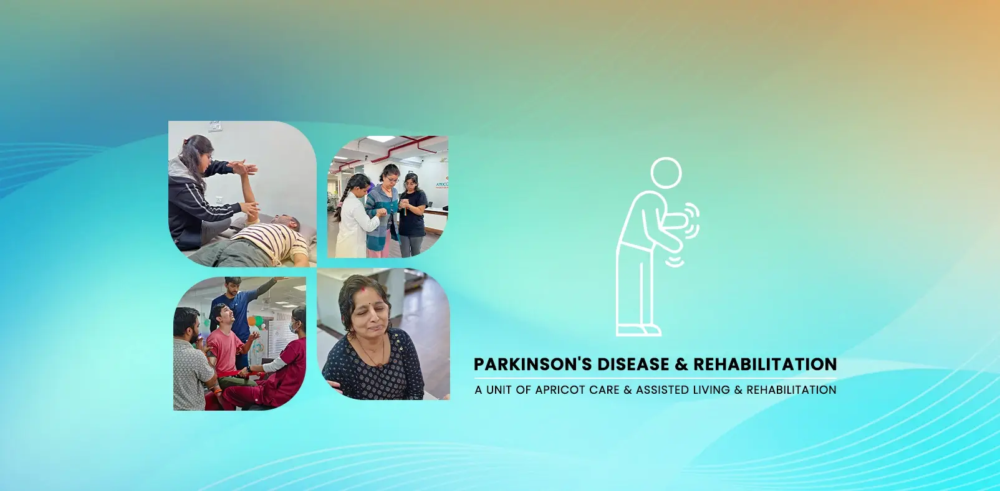

Specialized Care for Parkinson's Disease Patients in Pune


Improving Strength, Mobility, and Function to Proactively Manage Parkinson's
Living with Parkinson's Disease presents a unique set of daily challenges. At Apricot Care Assisted Living and Rehabilitation, we provide a comprehensive, evidence-based rehabilitation program designed to empower you, helping you manage symptoms, improve your functional abilities, and enhance your overall quality of life. Our goal is to be your active partner in this journey.
Understanding the Stages of Parkinson’s Disease
Parkinson’s disease progresses through distinct stages. Understanding where you or your loved one currently stands can help you plan the right level of care and therapy. Medical professionals commonly use the Hoehn and Yahr Scale, a five-stage system, to describe how Parkinson’s symptoms progress over time.
Stage 1: Mild Symptoms
- Tremors, stiffness, or slowness appear on one side of the body only.
- Daily activities are not significantly affected.
- Most people at this stage do not seek rehabilitation, but starting early gives you a significant advantage.
Stage 2: Both Sides Affected
- Symptoms now appear on both sides of the body.
- Walking and posture may change noticeably.
- Daily tasks take longer but can still be completed independently.
- This is the ideal time to begin a structured rehabilitation program.
Stage 3: Mid-Stage with Balance Problems
- Balance becomes impaired and falls become more likely.
- Movements slow down further.
- You can still live independently, but activities like dressing and eating may require more effort.
- Physiotherapy and occupational therapy at this stage can significantly slow functional decline.
Stage 4: Severe Limitations
- Symptoms are significant.
- Walking may still be possible, but assistance is usually needed.
- Living alone without help is generally not safe.
- Intensive daily rehabilitation and assistive devices become essential to maintain as much independence as possible.
Stage 5: Advanced Stage
- Stiffness in the legs may make standing or walking impossible without support.
- Round-the-clock care is typically required.
- Even at this stage, rehabilitation can improve comfort, prevent complications like pressure sores and joint contractures, and support emotional well-being.
Parkinson’s Disease in India: The Growing Need for Specialized Care
India has one of the fastest-growing elderly populations in the world, and with it, the number of people living with Parkinson’s disease is rising steadily. Current estimates suggest that over 580,000 Indians are living with Parkinson’s, and this number is projected to double by 2040 as the population ages.
Despite these numbers, access to specialized Parkinson’s rehabilitation remains limited in most Indian cities. Many patients rely solely on medication (such as Levodopa or dopamine agonists), without ever receiving the structured physiotherapy, speech therapy, or occupational therapy that research consistently shows can dramatically improve quality of life.
Pune, as one of India’s leading healthcare destinations with a growing senior population, is an area where dedicated Parkinson’s rehabilitation services are particularly needed. Apricot Care Assisted Living and Rehabilitation, located in Kharadi, Pune, was established to fill this gap, offering the kind of specialized, multidisciplinary Parkinson’s care that was previously only available in major metro hospitals or abroad.
Our Parkinson’s-Specific Therapies Explained
LSVT BIG Therapy: Retraining Your Movements
LSVT BIG is an evidence-based, intensive exercise program designed specifically for people living with Parkinson’s disease. Parkinson’s can cause your movements to become smaller and slower over time, often without you realizing it. The core principle of LSVT BIG is to help you recalibrate your movement by practicing big, exaggerated movements until they become your new normal.
The program follows a structured protocol: four sessions per week for four consecutive weeks, each lasting about an hour. During these one-on-one sessions, your certified LSVT BIG therapist will guide you through whole-body exercises, everyday functional tasks (such as reaching, standing up from a chair, and walking), and set up a tailored home exercise program.
Research has shown that LSVT BIG can improve walking speed, step length, trunk rotation, and balance in people with Parkinson’s. At Apricot Care, our physiotherapists are fully certified in the LSVT BIG protocol—this is not a general exercise class, but a personalized, intensive rehabilitation for your specific movement challenges.
LSVT LOUD Therapy: Restoring Your Voice
Many people with Parkinson’s develop a soft, monotone, or breathy voice (called hypophonia), often before they realize it themselves—a loved one commonly notices the change first. LSVT LOUD is the companion program to LSVT BIG, and is specifically targeted to address voice and speech changes caused by Parkinson’s.
LSVT LOUD’s focus is on intensive practice of the core concept: "Think loud." Over four weeks of one-on-one therapy (four sessions per week), your speech therapist will work with you on speaking louder and clearer until it feels natural. Therapy also addresses articulation, facial expression, and even swallowing difficulties, which frequently accompany Parkinson's.
Clinical studies show that benefits of LSVT LOUD can last up to two years after treatment—one of the most durable speech interventions available for people with Parkinson’s.
Gait and Balance Rehabilitation
Falls are one of the most serious risks for people with Parkinson’s due to shuffling, “freezing” (where your feet suddenly feel glued to the floor), and loss of balance. Our program combines multiple approaches to improve walking and prevent falls:
- Cueing strategies (visual, auditory, tactile) to initiate smoother movement
- Treadmill training with body-weight support when needed
- Dual-task training (walking while talking or counting) to improve daily safety
- Obstacle navigation and home-based safety exercises
Our therapists train you and your family with practical strategies to handle freezing episodes at home, helping you walk with longer steps, greater confidence, and fewer falls.
Occupational Therapy for Daily Living
Parkinson’s can make tasks like buttoning a shirt, writing, using a mobile phone, or preparing meals challenging. Our occupational therapists support you with:
- Exercises for fine motor skills and hand coordination
- Training with adaptive strategies and assistive devices for safer daily activities
- Home assessments and recommendations (grab bars, non-slip mats, arranging furniture, improved lighting) to reduce fall risk and increase independence
The goal is to help you stay as safe, independent, and active as possible in your own routine.
Cognitive and Psychological Support
Parkinson’s also impacts mental health. Up to 50% of people with Parkinson’s experience depression; others struggle with anxiety, apathy, or changes in memory and attention. These non-motor symptoms can deeply affect quality of life.
Our psychologist offers individual counseling sessions, cognitive exercises to maintain sharpness, and guidance for family members and caregivers—all designed to support emotional well-being and resilience at every stage of Parkinson’s.
Nutrition and Diet Guidance for Parkinson’s Patients
What you eat—and when you eat it—can directly impact both the effectiveness of your Parkinson’s medication and your energy for therapy. Our dietitians create individualized meal plans that address the specific nutritional challenges of Parkinson’s disease.
- Protein and Medication Timing: Levodopa (the most common Parkinson’s medication) competes with dietary protein for absorption. Eating high-protein meals at the same time as taking your medication can reduce its effectiveness and trigger “off” periods. Our experts teach you how to plan your protein intake around your medication schedule so you get the nutrition you need—without reducing symptom control.
- Fiber and Digestive Health: Up to 80% of people with Parkinson’s struggle with constipation. We prioritize high-fiber foods (whole grains, fruits, vegetables, legumes) and adequate water intake in meal plans to support comfortable, regular digestion and bowel habits.
- Bone Health and Fall Prevention: People with Parkinson’s are at increased risk of falls and fractures. Every meal plan includes calcium-rich foods (dairy, leafy greens, and fortified products) and Vitamin D for bone strength. We coordinate with your neurologist if supplements are required.
- Swallowing-Safe Meal Preparation: As Parkinson’s progresses, difficulty swallowing (dysphagia) is common and can be dangerous. Our meal plans and kitchen staff work hand-in-hand with speech therapists to provide meals with the right texture, consistency, and safety—minimizing choking risk and making every meal both delicious and secure.
- Antioxidant-Rich Foods: New research suggests a diet rich in antioxidants (berries, nuts, dark leafy greens, turmeric, green tea) may help protect brain cells from oxidative stress. Our nutrition approach includes these foods to support overall brain health and vitality.
While no specific food cures Parkinson’s, a thoughtful, individualized diet is a powerful tool to improve quality of life, energy levels, and overall health. We’re committed to making every bite count—safely and enjoyably.
Support for Families and Caregivers
A Parkinson’s diagnosis affects the entire family. Caregivers often carry a heavy physical and emotional load: helping with daily tasks, managing medications, providing transportation to appointments, and coping with the gradual changes in their loved one. At Apricot Care, we recognize that supporting the caregiver is just as important as treating the patient.
Caregiver Training and Education
Hands-on training for family members covers:
Safe transfer techniques (helping your loved one get in and out of bed, chairs, and cars)
Fall prevention strategies at home
How to assist during a freezing episode
Medication management best practices
Recognizing signs that symptoms may be changing and need medical attention
Respite and Emotional Support
Our inpatient facility offers respite care options, giving caregivers a chance to rest while knowing their loved one is in safe, expert hands.
Our psychologist provides counseling sessions specifically for family members to help them process their emotions and develop healthy coping strategies.
Preparing Your Home for Safe Living
Before discharge, or as part of our outpatient program, our occupational therapists conduct a home environment assessment. We provide specific, actionable recommendations, including:
- Where to install grab bars, and how to rearrange furniture to create clear walking paths
- Advice on lighting to reduce fall risk
- Recommendations for adaptive devices such as raised toilet seats, non-slip mats, and weighted utensils to make daily life easier for both the patient and the caregiver
Key Components of Your Parkinson's Care
A well-rounded Parkinson's Care regimen focuses on enhancing your physical strength, balance, flexibility, cognitive abilities, and emotional health, ensuring a holistic improvement. Our integrated program includes:
- Gait, Balance & Mobility Training: To improve walking and reduce fall risk.
- LSVT BIG® & LOUD® Therapy: Gold-standard treatment for movement and speech.
- Physiotherapy: To address stiffness, slowness, and tremors.
- Occupational Therapy: For independence in daily activities.
- Speech & Swallow Therapy: To manage voice changes and swallowing issues.
- Cognitive & Psychological Support: To address non-motor symptoms like depression and apathy.
- Nutritional Counseling: To support overall health and medication effectiveness.
- Therapeutic Recreation: To maintain engagement in joyful and meaningful hobbies.
What is Parkinson's Disease?
Parkinson's disease is a progressive neurological disorder that primarily affects the motor system. It occurs due to the gradual loss of dopamine-producing cells in a part of the brain called the substantia nigra. Dopamine is a chemical messenger that is crucial for smooth, controlled movement. As dopamine levels decrease, a person may experience the primary symptoms of Parkinson's:
- Tremors: Often starting in one hand when at rest.
- Bradykinesia: Slowness of movement, making it difficult to initiate actions.
- Rigidity: Stiffness in the arms, legs, or trunk.
- Postural Instability: Problems with balance and coordination, which can lead to falls.
In addition to these motor symptoms, individuals may also experience non-motor symptoms like changes in speech (soft voice), difficulty swallowing, cognitive changes, depression, and sleep disturbances. The prevalence of Parkinson's is rising globally, and it is estimated that over half a million people are living with the condition in India today, making access to specialized care essential.
While there is currently no cure for Parkinson's, a proactive, comprehensive rehabilitation plan can significantly help manage symptoms and improve quality of life.
Introduction to Parkinson's Rehabilitation
Parkinson's rehabilitation is a specialized program that uses the principles of neuroplasticity—the brain's ability to form new connections—to fight back against the effects of the disease. The goal is to use intensive, targeted exercise and therapy to help the brain use its available dopamine more efficiently and maintain functional pathways.
A comprehensive rehab program is tailored to address the specific challenges of PD, aiming to enhance mobility, improve balance, increase the clarity and volume of speech, and support overall independence. By collaborating with a multidisciplinary team of experts, you can create a personalized plan to proactively manage your condition.
Request a Call Back to Discuss a Care Plan3 Simple Steps to Begin Your Recovery Plan
- BOOK APPOINTMENT: Schedule a comprehensive assessment with our Parkinson's care specialists.
- VISIT OUR PUNE FACILITY: Meet the team and get acquainted with our supportive, state-of-the-art environment.
- BEGIN YOUR PERSONALIZED PROGRAM: Start your one-on-one therapy program designed to meet your specific goals.
Benefits of a Specialized Parkinson's Care Program
Engaging in a structured rehab program at Apricot Care Assisted Living and Rehabilitation provides numerous tangible benefits:
- Improved Mobility: Our therapies, especially LSVT BIG®, directly target walking speed, step length, and balance to help you move more freely and safely.
- Enhanced Symptom Management: We provide effective strategies to manage tremors, stiffness, and "freezing" episodes.
- Greater Functional Independence: Occupational therapy helps you maintain your ability to perform daily self-care tasks for longer.
- Clearer, Louder Speech: Specialized speech therapy like LSVT LOUD® can dramatically improve your ability to be heard and understood by others.
- Increased Safety & Reduced Fall Risk: Our balance and strength programs are proven to reduce the risk of falls, a major concern for people with PD.
- Improved Emotional Well-being: Psychological support helps you and your family cope with the emotional challenges of a chronic diagnosis, fostering a more positive outlook.

our service
Our Comprehensive Care and Support Services
.webp)
.webp)
-(1).webp)
24/7 Nursing and Medical Supervision
At Apricot Care Assisted Living and Rehabilitation, we provide 24/7 nursing support to ensure that you receive continuous care and medical monitoring. Whether you're staying in our facility or recovering at home, our trained nurses and medical staff are always available to address your needs, ensuring a safe and secure environment throughout your recovery journey.
.webp)
.webp)
.webp)
.webp)
.webp)
.webp)
.webp)
.webp)
.webp)
.webp)
.webp)
.webp)
Why Choose Apricot Care Assisted Living and Rehabilitation For Parkinson's Care in Pune?
Certified LSVT BIG® & LOUD® Physiotherapists
We offer the global gold-standard treatment protocols for Parkinson's motor and speech symptoms, delivered by certified professionals. This is a level of specialization many other centers do not provide.
Holistic, Multidisciplinary Approach
Our team of Physiotherapists, occupational Physiotherapists, speech Physiotherapists, and psychologists all work together on your care plan.
Personalized Treatment Plans
Your program is designed around your specific needs and goals, not a generic template.
A Positive and Motivating Environment
We believe in an active, high-effort approach. Our center is a place of energy and empowerment to help you achieve your best.
Dedicated Team for Continuous Support
We are your long-term partners in this journey, adapting your program as your needs evolve.
Advanced Technology and Techniques
We utilize evidence-based techniques and tools to provide the most effective care possible.